LakeScope › VT
Lake Champlain today
Updated 2026-11-14 - Atlas Labs
44°F water, level falling, 1 ft below normal, windy Saturday (17 mph NW).
Water level
93.22 ft
USGS gauge 04294413 - 2026-11-14
7-day trend: falling (-0.35 ft). Compared with normal for this date: -1.3 ft (same weeks, 2016-2025).
Water clarity and algae
No fresh view yet Clouds have hidden the lake lately.
Surface temperature
44°F
seen from space on 2026-11-11

Ice
Open - 0% ice cover
Estimate from weather and satellite, not a measurement. Check the ice yourself before going on it.
Weather, next 3 days
| Day | Sky | High / low | Wind | Rain |
|---|---|---|---|---|
| Saturday | Rain And Snow Showers | 43 / 38°F | 17 mph NW | 83% |
| Sunday | Mostly Cloudy | 45 / 37°F | 25 mph NW | 14% |
| Monday | Partly Sunny | 47 / 35°F | 12 mph NW | 0% |
Sunrise 06:48 - sunset 16:26 - Waxing crescent. National Weather Service.
Get the LakeScope app: alerts and the 3-D view of Lake Champlain